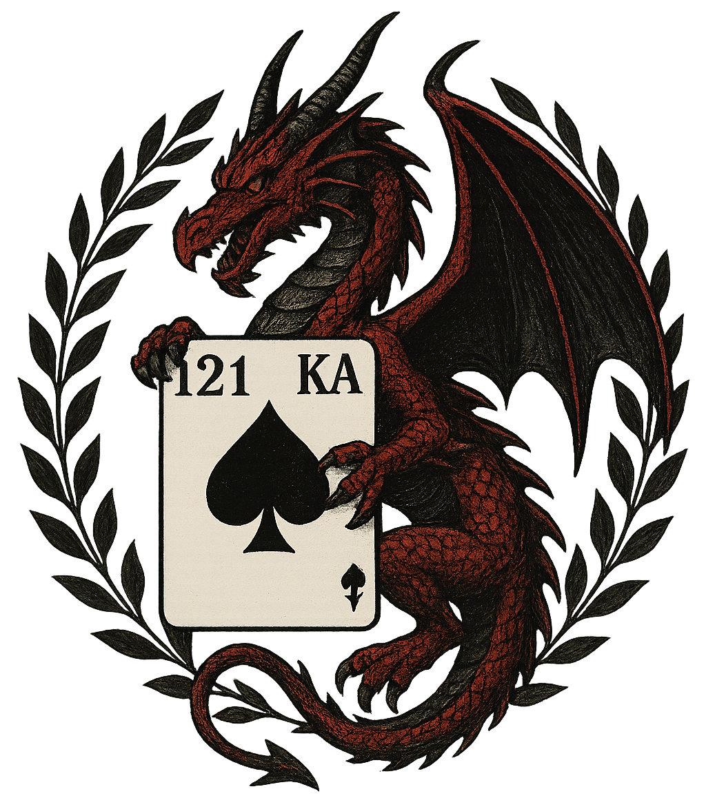
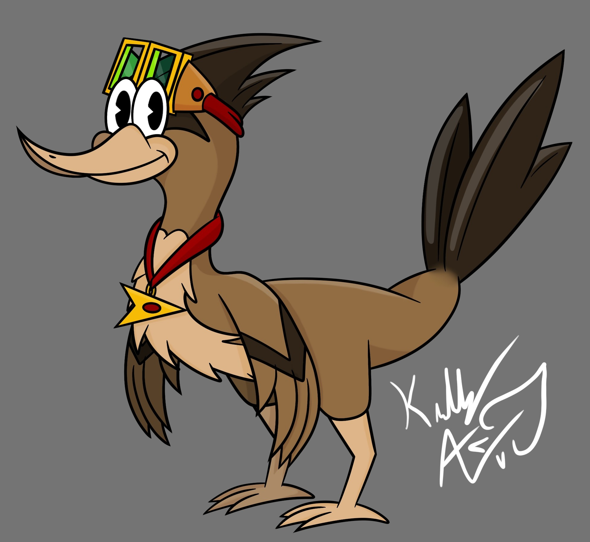
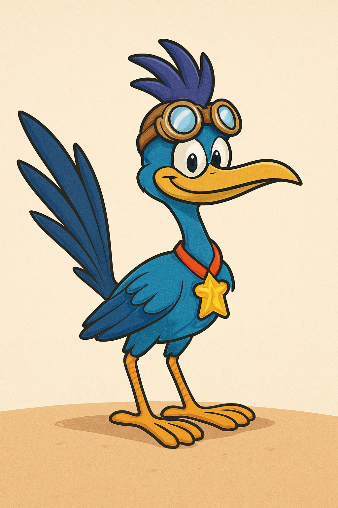

ChatGPT, the most common AI Chatbot around the internet, from giving broken responses in its early development, to being able to pass as human, ChatGPT grew at an alarming rate to where it can do almost anything it is prompted to, as long as it's not illegal.
Due to its popularity, generating images is not only fast, but simple. I knew I wanted to compare AI generated images to human work, but I didn't want ChatGPT to learn from my drawings to possibly fuel its future outcomes, so I gave a breif description of what my drawing was to generate. This is also how people generate images with ChatGPT in the first place, it doesn't exist until the prompt is typed. For this comparison to be fair, I decided to give ChatGPT a prompt describing a character I created, so it would be completly original and had no interference of other artists from the internet. Drawing this character is years of experience on my end similar to the years of development on ChatGPT's end.


Looking at this image ChatGPT generated, it's clear what inspired this generation in specific. Because of the words "cartoon" and "roadrunner" ChatGPT pulls from medias of these two and realizes there is a character that fits both of these, The Roadrunner from Looney Tunes. I never specified what color Agil was, ChatGPT made the colors similar to an already exisiting character to make the generation easier. Agil's colors were based on an actual roadrunner for this exact reason.
ChatGPT pulls from popular medias in order to create around its prompt, had I not used the word "cartoon", ChatGPT would've most likely taken inspiration from the animal rather than a popular character. The whole reason I even put "cartoon" in the prompt in the first place is because cartoon styled is my style.